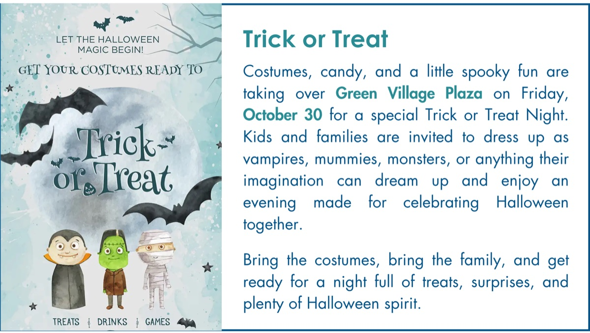
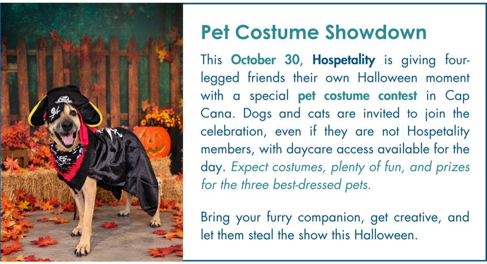
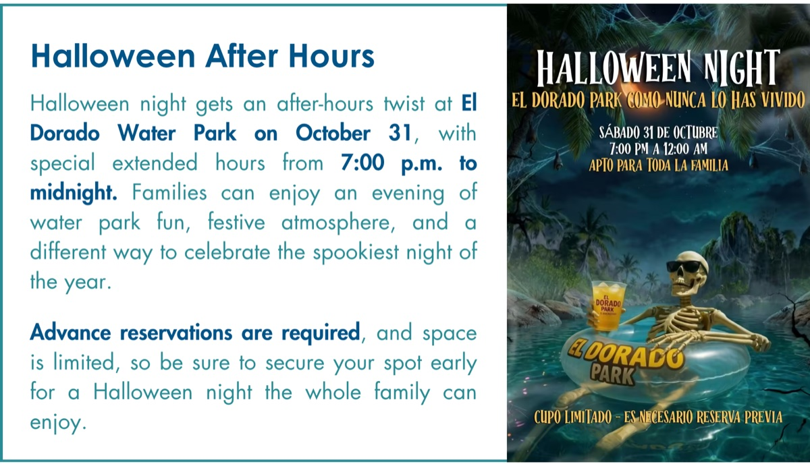
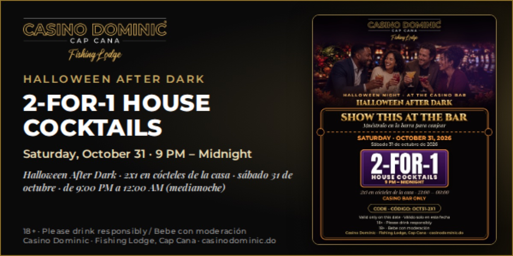
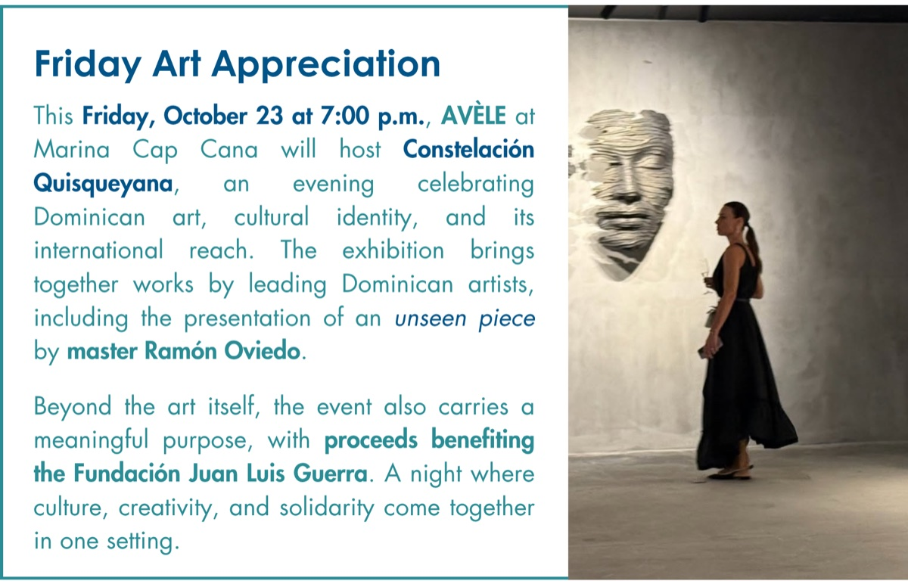
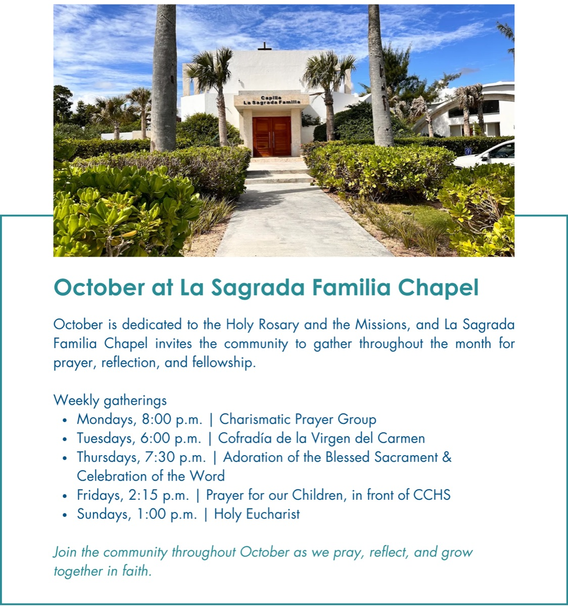
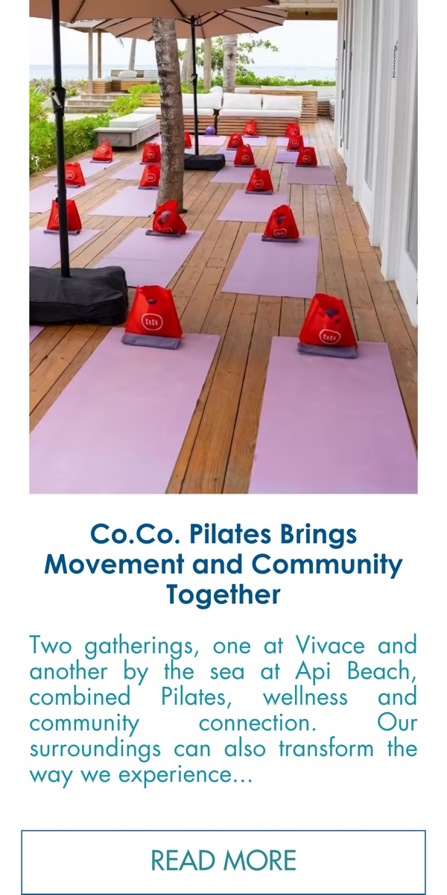
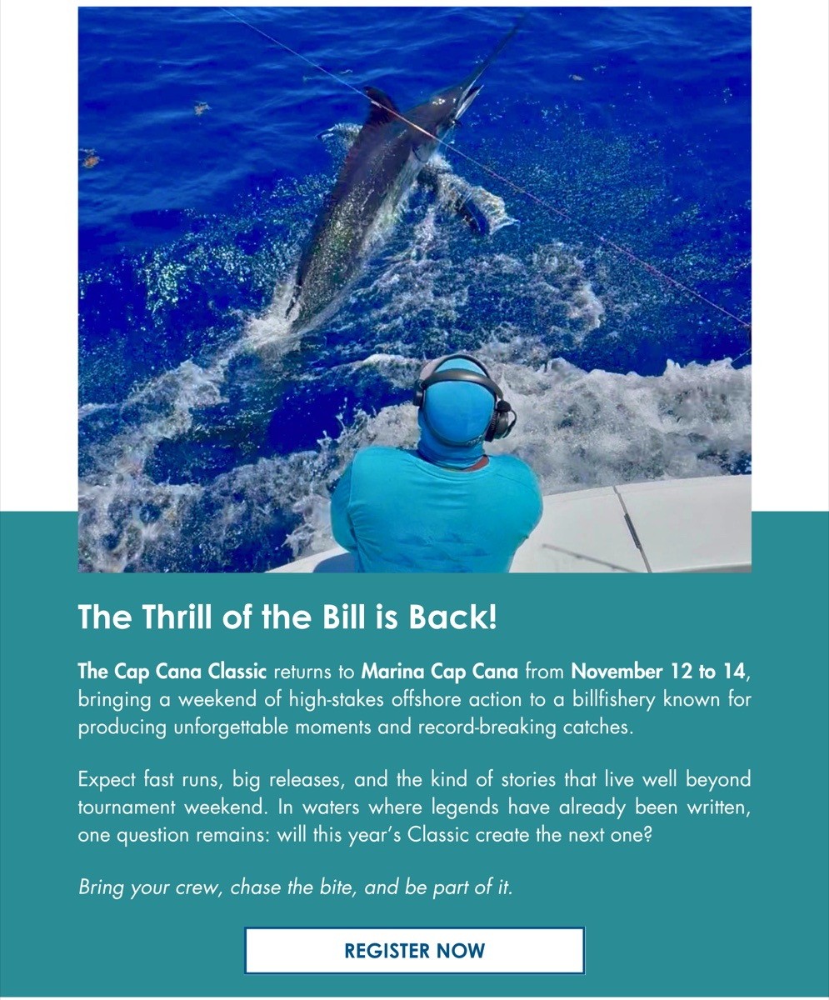
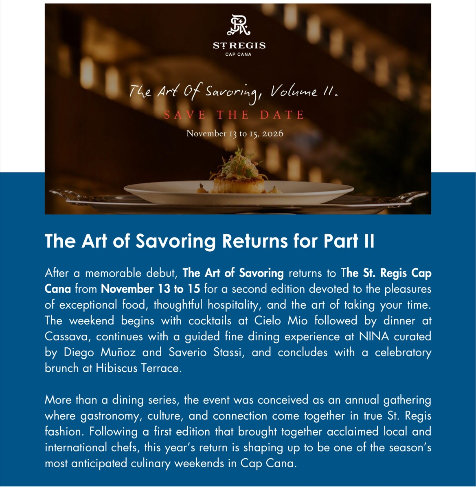

Local calendar
Cap Cana events in October 2026: Halloween, golf and more

Cap Cana’s October calendar mixes golf-weekend activities, art, dining, Halloween fun, and community gatherings. This roundup is based on the October 22, 2026 issue of Cap Cana’s Weekly Wave. It separates October listings from events announced for November and notes where the newsletter leaves out a time, address, or booking information.
October 24: golf-weekend pop-ups and evening events
Mahjong and designer pop-up at the Cap Cana Golf Cup
Local designer Carolina Sanz is scheduled to host a pop-up in the Cap Cana Golf Cup hospitality tent from 9:00 a.m. to 5:00 p.m. The listing also advertises guided Mahjong open play led by Diana Mella of Diccia. RSVP is required; players and their partners are invited as a courtesy, while non-playing guests may attend with a US$30 donation to Fundación Forjando un Futuro. Confirm access and RSVP details with the organizer.
Maranello collectors’ event at Los Establos
A Maranello-themed event is listed for 7:00 p.m. at Los Establos, Cap Cana. The flyer describes it as an event open to Cap Cana and indicates semiformal tropical attire. Check with the venue for entry and any registration requirements.
Set & Go Tournament at Los Establos
The same-day Set & Go Tournament is advertised at Los Establos, with activity beginning at 5:30 p.m. and a later session listed at 7:30 p.m. The event includes a costume-related prize. Confirm the format, availability, and registration details before attending.
October 28: Charcoal Nights at Marola
Marola lists Charcoal Nights from 6:00 to 10:00 p.m., featuring live grilling, selected ingredients, and red-wine pairings. The flyer shows October 28 as one of the scheduled dates. Contact the restaurant to confirm reservations and the current menu.
October 30: Halloween for families and pets
Trick or Treat Night at Green Village Plaza
Families are invited to a Halloween celebration at Green Village Plaza on Friday, October 30. The listing mentions costumes, treats, drinks, and games, but does not include an event time. Confirm the schedule and any access details with the plaza.

Pet Costume Showdown
Hospetality is hosting a Halloween costume contest for dogs and cats on October 30. The flyer says daycare access is available for the day and prizes will go to the three best-dressed pets. The start time and sign-up details were not included.

October 31: Halloween after dark
Halloween After Hours at El Dorado Water Park
The water park advertises extended Halloween hours from 7:00 p.m. to midnight on Saturday, October 31. Advance reservations are required and space is limited, so check availability before making plans.

Two-for-one house cocktails at Casino Dominic
Casino Dominic at Cap Cana Fishing Lodge lists a two-for-one house-cocktail offer from 9:00 p.m. to midnight on October 31. The flyer marks the event 18+. Please drink responsibly and confirm offer terms with the venue.

More October listings
Friday Art Appreciation at Marina Cap Cana
AVÈLE at Marina Cap Cana advertised “Constelación Quisqueyana” for Friday, October 23, at 7:00 p.m. The exhibition celebrated Dominican art and cultural identity, with proceeds benefiting Fundación Juan Luis Guerra. This date has passed.

October gatherings at La Sagrada Familia Chapel
The chapel’s October schedule lists recurring community gatherings: Charismatic Prayer Group on Mondays at 8:00 p.m.; Cofradía de la Virgen del Carmen on Tuesdays at 6:00 p.m.; Adoration of the Blessed Sacrament and Celebration of the Word on Thursdays at 7:30 p.m.; prayer for children on Fridays at 2:15 p.m. in front of CCHS; and Holy Eucharist on Sundays at 1:00 p.m. Confirm the schedule with the chapel before attending.

Co.Co. Pilates gatherings
The newsletter mentions Co.Co. Pilates gatherings at Vivace and by the sea at API Beach, combining Pilates, wellness, and community. It does not give October dates or times, so check with Co.Co. for the current schedule.

Looking ahead to November

- November 7 — Themba at El Dorado Water Park: Listed in the newsletter’s event preview; a time was not provided.
- November 12–14 — Cap Cana Classic: The offshore fishing tournament returns to Marina Cap Cana. Check the organizer’s registration and spectator information.
- November 13–15 — The Art of Savoring, Volume II: The St. Regis Cap Cana advertises a culinary weekend with cocktails at Cielo Mio, dinner at Cassava, a guided dining experience at NINA, and brunch at Hibiscus Terrace.

Stay near Cap Cana
See our Cap Cana apartment and compare it with our Punta Cana Village home.